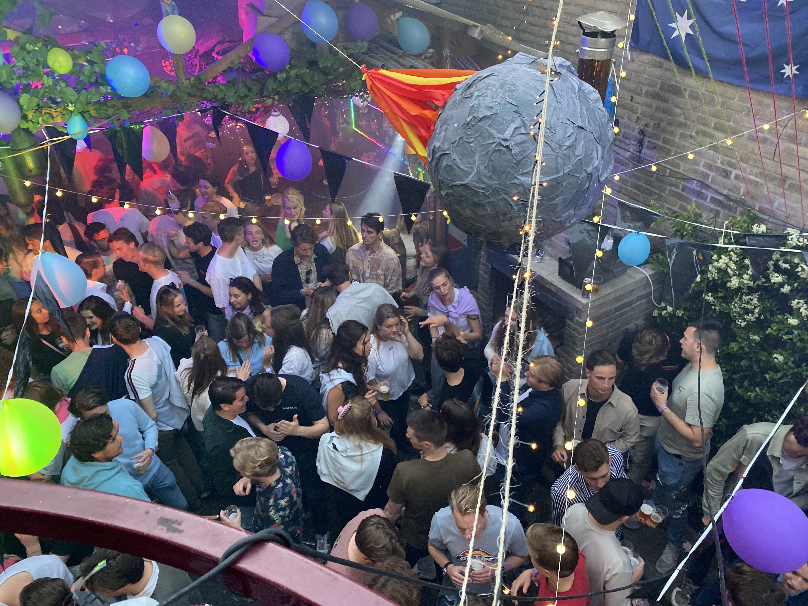

Het Meteoor Huisfeest
Meteoor organiseert sinds 2015 ook jaarlijks une fête au château. Ergens in de buurt van de overgang van de grasmaand naar de bloeimaand vieren wij dan de aankoop van ons dispuutshuis en openen wij met trots onze deuren voor het E.S.C, bevriende clubjes en vrienden van thuis. Tijdens dit Meteoor huisfeest staat ons hele huis weer vol met studenten en het feest is dan ook jaar-op-jaar een daverend succes. Onze binnentuin wordt omgetoverd tot een festivalterrein en het bier zal onbeperkt vloeien.
